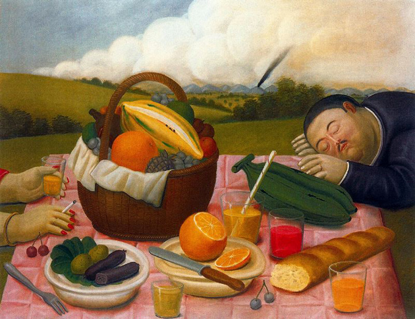

BIOGRAFIA DE FERNANDO BOTERO
Pocos artistas hispanoamericanos han logrado tanta repercusión a nivel internacional como el
pintor y escultor colombiano Fernando Botero. Su personalísimo estilo, que tiene entre sus rasgos más fácilmente
identificables el agrandamiento o la deformación de los volúmenes, ha merecido la admiración tanto de la crítica
como del gran público, que no puede sustraerse a la singular expresividad de una estética en la que las
problemáticas humanas y sociales ocupan un lugar prioritario.
Fernando Botero
Nacido en Medellín en 1932, Fernando Botero fue el segundo de los tres hijos de la pareja formada por David Botero Mejía y Flora Angulo de Botero. Aunque en su juventud estuvo durante un corto lapso de tiempo en la Academia de San Fernando en Madrid y en la de San Marcos en Florencia, su form ación artística fue autodidacta. Sus primeras obras conocidas son las ilustraciones que publicó en el suplemento literario del diario El Colombiano, de su ciudad natal.
A los 19 años viajó a Bogotá, donde presentó su primera exposición individual de acuarelas, gouaches, tintas y óleos en la Galería Leo Matiz, y con lo recaudado vivió algún tiempo en Tolú. De su estancia allí saldría el óleo Frente al mar, con el que obtuvo el segundo premio de pintura (retribuido con dos mil pesos) en el IX Salón Anual de Artistas Colombianos. El crítico Walter Engel, en El Tiempo del 17 de agosto de 1952, encontró que tenía "una composición vigorosa, bien construida y bien realizada", pero el escritor Luis Vidales lo criticó por su "inconceptual alargamiento de las figuras".
Viajó entonces Botero a Europa, donde residió por espacio de cuatro años, principalmente en Madrid, Barcelona, París y Florencia. Aunque ingresó en las academias antes mencionadas, siguió formándose a base de leer, visitar museos y, sobre todo, pintar, como él mismo diría. Luego viajó a México, Nueva York y Washington en un período de febril creación y escasos recursos económicos, acompañado de su esposa Gloria Zea. De nuevo en Colombia, Botero compartió el segundo premio y medalla de plata en el X Salón de Artistas Colombianos con Jorge Elías Triana y Alejandro Obregón. Su óleo Contrapunto fue alabado por los críticos unánimemente por su alegría contagiosa.
La camera degli sposi obtuvo el primer premio en el XI Salón Nacional celebrado en septiembre de 1958; subtitulado Homenaje a Mantegna, el cuadro era una libérrima recreación de la obra homónima del pintor italiano Andrea Mantegna. En esta obra Botero logró deshacerse de una lejana influencia del muralismo mexicano y dirigirse, sin titubeos y por medio de su admiración a los artistas del Renacimiento italiano, hacia la consolidación de lo que alguien llamó el "boteroformismo".

Picnic (1989)
El pintor había manifestado desde hacía cuatro años su admiración por el sereno monumentalismo de Paolo Uccello y por lo que la escritora y crítica de arte argentina Marta Traba llamó "un Renacimiento de piedra, por la concepción-bloque de las formas", que también manejó Piero della Francesca; en La camera degli sposi, la exacerbación de los volúmenes y la concreción o formas geométricas básicas (que Walter Engel relacionó con las esculturas precolombinas de San Agustín) lograron el nacimiento de una pintura "profundamente original, tan antibarroca como anticlásica, tan antiexpresionista como antiabstracta", en palabras de Traba. El premio en el XI Salón, por otra parte, fue consagratorio.
Entre 1961 y 1973 fijó su residencia en Nueva York. Luego viviría en París, alternando su residencia en la capital francesa con largas estancias en Pietrasanta o su finca en el pueblo cundinamarqués de Tabio. Hacia 1964, Fernando Botero hizo sus primeras incursiones en el campo escultórico con obras como Cabeza de obispo, figura que, hecha en pasta de aserrín y con ojos de vidrio, tenía claras reminiscencias de la imaginería colonial barroca.

Fernando Botero posa junto a una de sus obras
A partir de 1975, en Pietrasanta, se dedicaría a la escultura con entusiasmo: "Parecía como si todo ese universo de figuras monumentales que fue desarrollando en la pintura -escribe Escallón- hubieran encontrado total eco en la tridimensionalidad. Hoy en día, la una alimenta a la otra. Gran parte de la riqueza imaginativa viene de la pintura, que le da ideas, soluciones, posibilidades... Botero desarticula la estructura pictórica para sintetizar la forma en una unidad escultórica".
En 1977 expuso sus bronces por primera vez en el Grand Palais de París. Tras cuatro decenios de labor ininterrumpida, su reconocimiento en el campo escultórico se hizo también universal. Apoteósica fue la exposición de sus enormes esculturas en los Campos Elíseos en París durante el verano de 1992, y en el año siguiente en la Quinta Avenida de Nueva York, en Buenos Aires y en Madrid.

Fernando Botero posa junto a una de sus lienzos sobre Abu Ghraib
Convertido ya en uno de los artistas vivos más cotizados del mundo, Botero no ha dejado nunca, sin embargo, de alzar la voz contra la injusticia y de mantener su arte en línea con la realidad histórica y social. Sirve para ilustrarlo una de sus más recientes series pictóricas, la que realizó sobre las torturas cometidas por los marines en la cárcel iraquí de Abu Ghraib (2003), en el marco de la ocupación norteamericana de Iraq. Presentada en 2005 en el Palacio Venecia de Roma, la fuerza turbadora de esta colección de cincuenta lienzos atestiguó además que el pulso y la creatividad del artista no ha menguado en absoluto con los años.